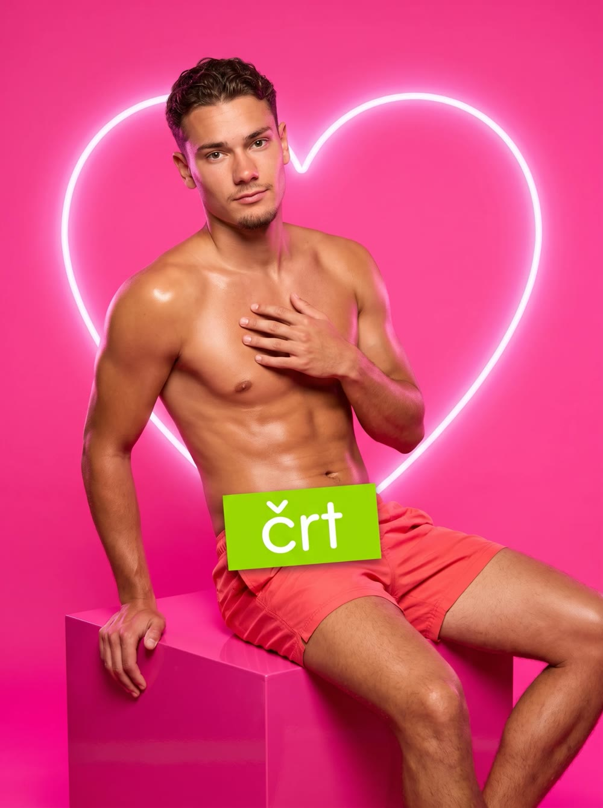
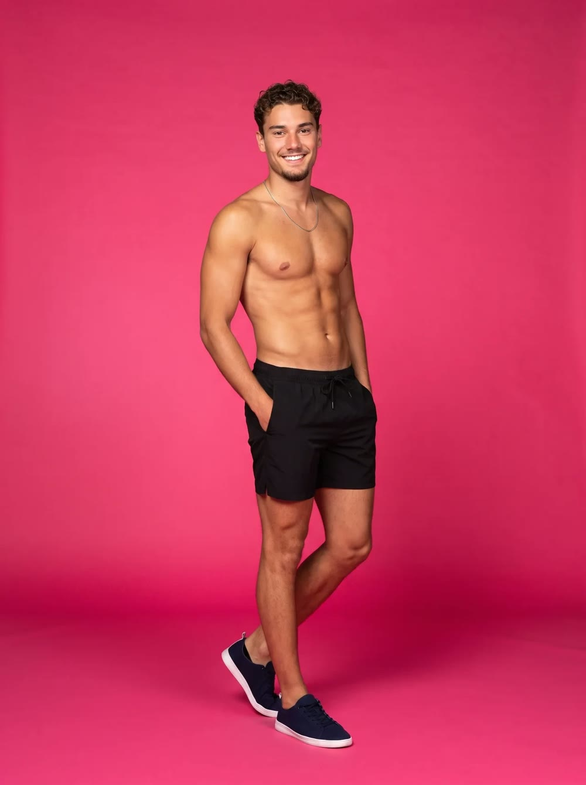

Šov biznis · Love Island Adria
Črt Vuković je novi bombshell v Love Island Adria
Včeraj se je na Tenerife v vilo odpravil Črt Vuković. V vili je šele en dan, a že meša štrene. S svojim privlačnim videzom je pritegnil veliko pogledov punc, posteljo pa je prvo noč delil kar z dvema.
- Ime
- Črt Vuković
- Vzdevki
- Vuko, Šminka, Vuko Lepinja, Lepi, Šminker, Vukica
- Status
- Novi bombshell
- Lokacija
- Vila, Tenerife
- Prva noč
- Postelja z Laro in Milo
Še pred nekaj tedni je sedel v hišnem priporu, prejšnji teden je v knjižnici reševal Spindija, včeraj pa je že stal na Tenerifih, pred vrati najbolj znane vile na Balkanu. Vukova kariera gre strmo navzgor. Mama ga je očitno izpustila iz pripora naravnost na letališče.
Prihod, ki ga vila ne bo pozabila
Ko je Vuko stopil skozi vrata, so se pogovori ob bazenu ustavili. Po pričevanjih je bilo slišati le še kapljanje vode iz tuša in tiho »ooo« z leve strani bazena. Kamere so ujele, kako se je predstavil:
»Zdravo, ja sam Črt Vuković, dolazim iz Marjete. Imam 21 godinu i igram fudbal. Na terenu sam brz, a van terena još brži. Volim loptice… i devojke koje znaju šta hoće. Došao sam u vilu da zabijem gol, i to pravo u srce.«
Črt Vuković, ob vstopu v viloMarjeta na Dravskem polju je tako prvič v zgodovini dobila svojega bombshella. Zakaj jo je Vuko predstavil v srbščini, ostaja skrivnost.
Galerija iz vile


Slovensko-srbska naveza
Najhitreje se je Vuko ujel s Stefanom. Fanta sta si bila všeč na prvi pogled, vsaj prijateljsko. Gledalci že govorijo o najmočnejši slovensko-srbski navezi v zgodovini šova.
Kamere so ju ujele tudi, ko sta se skupaj odpravila pod tuš. Kaj sta tam počela, se ne ve, saj zaradi varovanja zasebnosti v kopalnici ne smejo snemati. Uredništvo stavi na resen pogovor o taktiki za naslednjo tekmo. Fudbal, seveda.
Lara, Mila in ena postelja
Vuko pa ni ostal samo pri prijateljstvu. Že prvi dan je ukradel srce Lari in Mili. Ker se ni mogel odločiti, je prvo noč posteljo delil kar z obema. Poznavalci šova pravijo, da je to za bombshella, ki je v vili manj kot 24 ur, skoraj rekord.
Ostali fantje v vili so po neuradnih podatkih zaskrbljeni. Eden naj bi v izpovedni sobi priznal: »Mislil sem, da imam čas do petka.«
Odziv doma
»Upam, da imajo v vili Pepsi. Vuko ve, kaj pomeni žeja.«
Tilen Spindler, rešeni
»Šminka je vedno skrbel za videz. Zdaj vemo, za koga.«
Sošolec iz zadnje vrste
»Vsaj v vili ni nogavic, med katerimi bi lahko kaj skril.«
Vir blizu družine Vuković
Podjetniška lekcija
Vukov vstop v vilo je šolski primer uspešnega lansiranja izdelka. Jasna osebna znamka, odmeven prvi nastop in povpraševanje, ki že prvi dan presega ponudbo. Dve stranki, en izdelek. Vprašanje je le, ali bo Vuko znal obdržati obe ali pa bo moral narediti pivot.
Kako naprej?
Kako se bo Črt odrezal v prihodnje, lahko spremljate na Voyu ali v naših novicah. Zadnja vrsta ima v vili svoje vire in vam bo poročala o vsakem novem razvoju dogodkov.
Koga bo izbral Vuko?
Napovej z nami. Rezultat bomo komentirali, ko se razplete.
Moja napoved
Satira. Zgodba je izmišljena za zabavo. Zadnja vrsta ni povezana z oddajo Love Island Adria ali platformo Voyo.